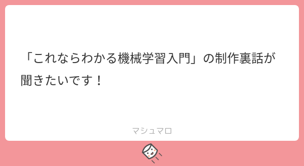

23: You are happy by definition
Starring


Show notes
目次
0:00 ゲスト紹介
- Lattice QCD - Wikipedia (格子QCD)
1:53 研究者を目指したきっかけ
サインコサインタンジェント、虚数i…いつ使うんだと思ったあなた。実は数学は、ゲーム業界を根から支える重要な役割を担っているんです。
今日は、セガ社内勉強会用の数学資料150頁超(!)を無料公開。#セガ技術ブログ クォータニオンとは？基礎線形代数講座 #segatechblog https://t.co/OEHDwlJ9Vz pic.twitter.com/eBUG2YJwH1— セガ公式アカウント🦔 (@SEGA_OFFICIAL) June 15, 2021
7:36 インフラ整備

14:30 大学時代
- 播磨理学キャンパス - 兵庫県立大学
兵庫県赤穂郡上郡町光都。Ep. 21 で出てきた SPring-8は兵庫県佐用郡佐用町光都。 - KEK サマーチャレンジ → Ep. 11 でも話しました。
- ディラック方程式 - Wikipedia
- Peskin, Schroeder 『An Introduction To Quantum Field Theory』
- 猪木・河合『量子力学』
- 村山斉 - Wikipedia
- ダークマターについて - XMASS
- 余剰次元 - 天文学辞典
- ダークマターと余剰次元:
Particle Data Group の Extra Dimension のレビュー (PDF) によれば、Warped Extra Dimensions (ランドール=サンドラム模型) や Universal Extra Dimensions などの模型に基づくダークマター(になり得る新粒子)が、ATLAS や CMS といった実験で探索されています。 (ちなみに oka のD論はこれらの模型の基となった Large Extra Dimensions を仮定したものでした)
31:18 大学院時代
41:12 物性、素粒子、アナロジー
- 経路積分 - Wikipedia
- 統計的場の理論 - Wikipedia
- ファインマン統計力学
- 「兵庫県立大ゼミでやったことある！」
- 南部陽一郎 - Wikipedia
- Nambu–Jona-Lasinio model - Wikipedia
ヨナ＝ラシニオ は統計力学の研究でも有名 - BCS理論 - Wikipedia
バーディーン: トランジスタ → 超伝導
クーパー: 超伝導 → ニューラルネットワーク
シュリーファー: 電子工学 → 原子物理 → 超伝導
45:49 @odakin、まほろばてい
- ワインバーグ『場の量子論』
収録後、ワインバーグの訃報に接しました。 「標準理論」確立に貢献、理論物理学者のワインバーグ氏死去…８８歳 : 読売新聞オンライン - まほろばていで語り合った日々
- 富谷さんの最初の論文 Symmetry breaking caused by large $\mathcal R$-charge - INSPIRE
- 田中さんの最初の論文(単著) Comments on knotted 1/2 BPS Wilson loops - INSPIRE
- 結び目理論 - Wikipedia
- ウィルソンループ - Wikipedia
- 魔法少女まどか☆マギカ
- けいおん！
- 南部先生ノーベル物理学賞受賞記念講演会
この講演でも @odakin さんが2列目正面に陣取っていることが分かる (okaも写っています)。
田島先生最終講義の話は Ep. 1 でしてます。
59:53 南部さんとのエピソード
- Nambu mechanics - Wikipedia
- ポアソン括弧 - Wikipedia
- 南部・ゴールドストーンの定理の拡張
南部陽一郎さん以来の問題を解決しました！渡辺悠樹氏との研究です。非相対論的な系で自発的に対称性が破れたときに、南部ゴールドストーン粒子の個数と分散関係、そしてその背後にある部分的にsymplecticな幾何学についての論文です。http://t.co/HyXk3zZ2
— 村山斉 (@sleptogenesis) April 24, 2012
- カフェテリアらふぉれ (@laforet_gfk)
- 南部・ゴールドストーン粒子、南部流体、南部括弧、南部表示、南部・後藤作用、南部-ヨナラシニオ模型
- 相互作用描像 (朝永描像)、朝永–ラッティンジャー液体
- 湯川ポテンシャル、湯川相互作用 (湯川カップリング)
1:10:00 学振
1:12:29 ポスドク時代
1:28:20 機械学習の研究を始める
- AlphaGo - Wikipedia
- Carrasquilla, Melko Machine learning phases of matter - Nature Physics
 (arXiv 1605.01735)
(arXiv 1605.01735) - ペリメーター理論物理学研究所 - Wikipedia
- 異常磁気モーメント - Wikipedia
詳しくは Ep. 19 を参照。
お知らせ
- 出演して頂ける方や感想などをお待ちしております。 #interaxion
おたよりコーナーを作りました。質問、感想、要望などお待ちしております。https://t.co/rz0mlRKZU3
— Interaxion Podcast (@interaxion) January 12, 2021